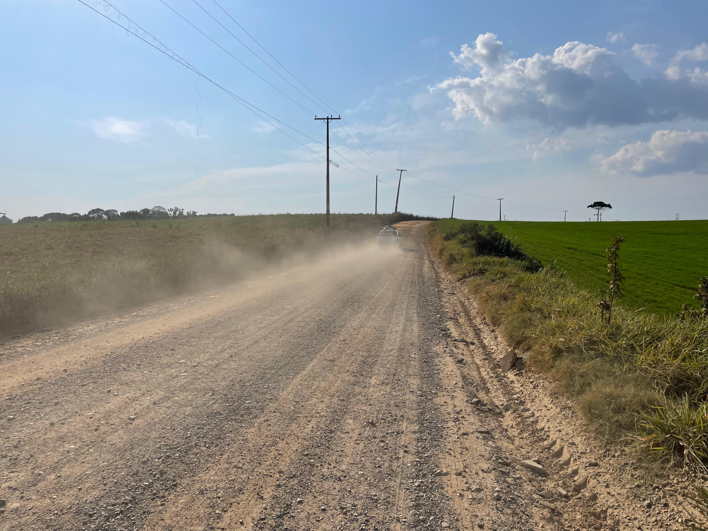

E solucionar que é bom, como faz?
Bom, tanto se fala nos problemas, mas nunca de solucionar, isso é um dos itens mais importantes para que haja uma melhora na produção, educação, IDH e desenvolvimento da sociedade. Assim, eu lhe apresento brevemente algumas formas de solucionar esse problema grave!
Investimento em Pavimentação e melhoria nas Estradas!
Como muitos sabemos e ignoramos (infelizmente), as estradas rurais infelizmente não são das melhores, sendo feita de terra, o que resulta em situações horríveis (já dito na página anterior). Entretanto, uma melhora significativa na qualidade dessas estradas seria um ótimo incentivo para mais remessa à região, já que terá maior qualidade para o pneu do veículo andar nas vias. Eu, particularmente morador de cidade rural (Campo Largo) vejo diversos problemas com estradas, falta de internet e/ou falta de comunicação, já que dificilmente tem acesso de serviços do governo em minha região, dificultando muito para que haja um crescimento tecnológico, educacional e na infraestrutura.
Melhoria na Educação.
Em muitos colégios, temos a falta de ensino decente para que possa sair novos gênios na sociedade! Mas, como ajudar para que isso aconteca? Parece simples, entretanto muitas vezes fica apenas no papel muitas ideias de melhora na infraestrutura escolar. Pouco se fala da dificuldade de locomoção dos estudantes e professores para escolas rurais, principalmente em dias chuvosos. Um investimento de qualidade vinda do governo para escolas públicas seria um ótimo exemplo de solução para melhora de ensino, aumento de salário dos funcionários públicos, já que no Brasil atual não temos mão-de-obra valorizada. Um bom início seria uma verba maior para os colégios de ensino público melhorarem sua estrutura de prédios, novas bibliotecas públicas, mais incentivo do governo para os estudantes. Dado que muitas vezes nossos estudantes não tem condições para estudo, ou muitas vezes na periferia o jovem estudante tem que conciliar o estudo e o trabalho para ter o que comer em casa. Tal acontecimento frequente poderia deixar de decorrer caso o salário da população tenha um maior valor.
Desenvolvimento de Saneamento.
 Infelizmente em muitas regiões brasileiras temos a falta de saneamento, isso é vidente. Porém, como solucionar esse problema tão agravante em nosso território nacional? Eu separei algumas formas e irei falar delas um pouquinho. Visto que muitas vezes em áreas rurais usam poços ou rios que passam perto das casas para abastecer suas moradias. Um ótimo jeito de melhoria dessa situação poderá ser com as Parcerias Públicas-Privadas (PPPs), a estimulação de parcerias com Organizações não governamentais (ONGs) ou com empresas privadas para financiar o saneamento seria um início para essa melhoria. Outra solução que pode ser pautada é a tecnologia apropriada e sustentável, como por exemplo fossas sépticas, biodigestores e filtros de areia, que são mais adequadas para áreas rurais com menor densidade populacional. Outro item que ajudaria à esse processo, é o armazenamento de água das chuvas para uso doméstico e agrícola. Um ponto importante para a continuação desse projeto e o funcionamento correto, seria o monitoramente contínuo da qualidade da água, para que não haja nenhuma infecção nela.
Infelizmente em muitas regiões brasileiras temos a falta de saneamento, isso é vidente. Porém, como solucionar esse problema tão agravante em nosso território nacional? Eu separei algumas formas e irei falar delas um pouquinho. Visto que muitas vezes em áreas rurais usam poços ou rios que passam perto das casas para abastecer suas moradias. Um ótimo jeito de melhoria dessa situação poderá ser com as Parcerias Públicas-Privadas (PPPs), a estimulação de parcerias com Organizações não governamentais (ONGs) ou com empresas privadas para financiar o saneamento seria um início para essa melhoria. Outra solução que pode ser pautada é a tecnologia apropriada e sustentável, como por exemplo fossas sépticas, biodigestores e filtros de areia, que são mais adequadas para áreas rurais com menor densidade populacional. Outro item que ajudaria à esse processo, é o armazenamento de água das chuvas para uso doméstico e agrícola. Um ponto importante para a continuação desse projeto e o funcionamento correto, seria o monitoramente contínuo da qualidade da água, para que não haja nenhuma infecção nela.
Descentralização Administrativa.
Um bom início para melhoria de governamentação nas áreas rurais é a descentralização administrativa, que consiste em muitos governos transferir uma maior autonomia para que haja uma gestão mais eficiente e uma melhora na infraestrutura, já que, caso esteja perto a prefeitura dos locais mais dispersos da área urbana, poderá entender o que se passa na região, fazendo com que os "obrigue" aprimorar vários itens da região, como já dito anterior, estradas, escolas, saneamento, etc. Vezes e vezes passa despercebido pelo simples fato de ser "esquecido" várias regiões, com menos visitas governamentais en certos locais, assim sendo que haja menor reconstrução do local. Um problema grave é serviços como de bombeiros, médicos e policiais serem distante, fazendo com que tenha um indíce maior de mortes nas áreas rurais, houve um agrave crescimento dessas mortes nos últimos quatro anos, o que preocupa a pequena parcela da população rural.